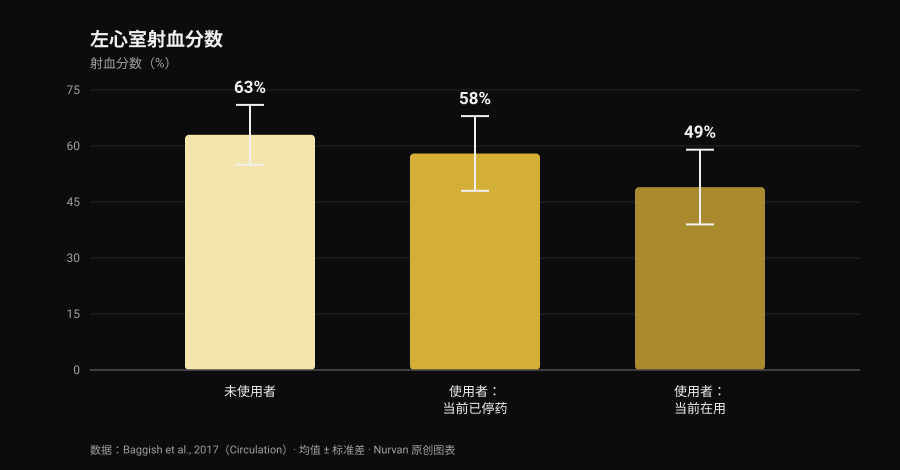
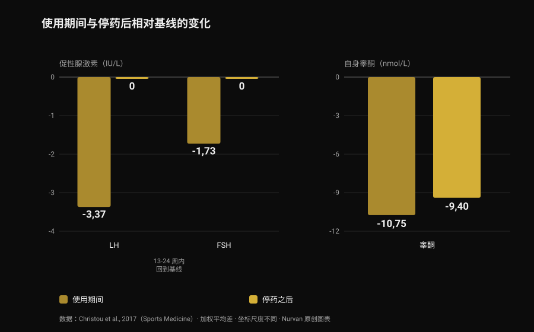

合成类固醇：副作用与真实风险
我刷到的一条帖子说了一句正确但不讨喜的话：合成类固醇确实有效，但你没法只挑自己想要的那部分效果。这是对的，而且文献能把它量化得比任何一张图卡都清楚。我读了八篇被收录的论文，想弄明白这个"打包方案"到底要付出多少代价——最让我意外的数字不是关于心脏的，而是关于恢复正常需要多久。
一分钟看完
- 有效这件事没有争议。 十周超生理剂量睾酮加训练：去脂体重 +6.1 公斤、卧推 +22 公斤、深蹲 +38 公斤。连不训练的人也长了肌肉（Bhasin et al., 1996）。
- 雄激素受体不只长在肌肉里。 丹麦登记数据中，痤疮、男性乳腺发育和勃起功能障碍各自影响超过 10% 的使用者（Horwitz et al., 2019）。
- 心脏是数据最扎实的器官。 左心室射血分数在使用者中为 52%，未使用者为 63%；检查时正在用药的人只有 49%（Baggish et al., 2017）。
- 回到原点比传言中慢得多。 停药后 LH 和 FSH 在 13-24 周回到基线，但身体自己分泌的睾酮在停药 16 周时仍比基线低 9.4 nmol/L（33 项研究的荟萃分析，Christou et al., 2017）。
- 少数人回不到原来的状态。 19 名未接受治疗的既往使用者中，有 5 人在停用 3-26 个月后睾酮低于 200 ng/dL；24 人中有 7 人在停药期出现重性抑郁发作（Kanayama et al., 2015）。
"有没有用"不是有意思的问题
这部分三十年前就结束了。1996 年，43 名男性被随机分到四组：安慰剂或睾酮，训练或不训练。使用超生理剂量睾酮并训练的人，十周内增加了 6.1 公斤去脂体重，肱三头肌横截面积增加 501 平方毫米，股四头肌增加 1174 平方毫米；卧推 +22 公斤，深蹲 +38 公斤。
更有启发的细节在另一边：不训练的人同样在长。睾酮不训练组的肱三头肌面积增加了 424 平方毫米，而安慰剂不训练组反而减少了 81 平方毫米。药物的作用独立于训练刺激，这也解释了它为何如此普遍：终生使用率估计在男性约 6.4%、女性约 1.6%（Nieschlag 和 Vorona, 2015）。
公平地说，在那项试验里，各组的情绪和行为都没有改变。但十周的医学监护不等于十年的自行用药周期——这篇文章剩下的内容，讲的正是这个差距。
为什么你没法只挑想要的效果
雄激素受体只有一种，而且它不是"肌肉的受体"。它表达在心肌、肝脏、皮肤、毛囊、前列腺、骨骼、喉部和大脑里。当循环中的雄激素远高于正常水平时，它对所有这些组织是同时升高的。
网上流传的表格里那个"合成代谢/雄激素比值"来自啮齿动物实验，在人体上并不会变成干净的组织选择性。实证检验在登记数据里：在 Horwitz 的丹麦队列中，痤疮、男性乳腺发育（男性乳腺组织增生）和勃起功能障碍各自影响超过 10% 的使用者。这三样没有一样是有人想要的。
在女性身上，有些条目是擦不掉的：痤疮和多毛很常见，而嗓音变粗不可逆（Nieschlag 和 Vorona, 2015）。最新的综述写得很直白：大多数不良反应轻微且可逆，但有一些可能造成永久损害，甚至危及生命（Linhares et al., 2022）。
所以有用的问题不是"我想要哪些效果"，而是我愿意接受哪些自己无法选择的效果。关于雄激素和头发，我们在肌酸会导致脱发吗里单独讲过 DHT 的机制。
心脏：证据最强的部分
最有信息量的是一项横断面研究：140 名 34 至 54 岁的力量训练者——86 人累计使用至少两年，54 人从未使用——接受了超声心动图和冠状动脉 CT 血管造影。

射血分数——左心室每次搏动泵出的血液比例——在使用者中平均为 52%，未使用者为 63%。舒张功能，也就是心室放松和充盈的能力，同样下降（早期松弛速度 9.3 对 11.1 厘米/秒）。作者直接称之为：心肌功能障碍。
在使用者内部还有一个值得记住的数字：检查时正在用药的人是 49%，已经停药的人是 58%。也就是说，泵血功能在停药后至少能部分恢复。
冠状动脉不行。斑块体积中位数在使用者中为 3 毫升，未使用者为 0 毫升，而且它随累计使用年限增长：每累计使用十年，动脉粥样硬化负荷就多 0.60 个标准差。这正是社交平台的摘要几乎从不区分的地方：收缩力会来会走，斑块是沉积物，而沉积物不会在一个周期结束时清空。
在临床事件方面，一项丹麦登记研究随访了 1189 名使用者约十一年，对照 59450 人，报告心肌梗死的校正风险比为 3.00，心肌病为 8.90（Windfeld-Mathiasen et al., 2025）。我们在睾酮与胆固醇里详细写过这个队列，以及血脂会发生什么。
真正需要多久才能恢复
这是健身房说法错得最多的地方，也是证据最扎实的地方：一项纳入 33 项研究、3879 名参与者（其中 1766 名使用者）的荟萃分析。

使用期间，支配天然睾酮分泌的轴会关闭：LH −3.37 IU/L、FSH −1.73 IU/L，自身睾酮相对基线 −10.75 nmol/L。这在意料之中：大脑看到雄激素过剩，就不再下订单。
关键在于之后。促性腺激素——垂体用来向睾丸下指令的激素——在 13-24 周回到基线。睾酮没有：停药 16 周时它仍比起点低 9.4 nmol/L。指令比工厂复工来得早。
对于早已停用的人，数据更直接。19 名未接受治疗的长期既往使用者，与 36 名从未用过任何药物的训练者相比，睾酮低 131 ng/dL，睾丸体积小 2.3 毫升，性欲评分在 10 分制上低 2.4 分；其中 5 人在停用 3 至 26 个月后仍低于 200 ng/dL。还有几乎从不出现在图卡里的部分：该研究的 24 名既往使用者中，7 人（29%）在停药期出现重性抑郁发作，其中 4 人一生中从未在其他时候发作过；2 人即便接受了足量替代治疗，性欲和勃起功能也没有恢复（Kanayama et al., 2015）。
生育方面的图景是一致的：精子数量、形态和活力改变，睾丸体积缩小；女性则出现阴蒂肥大、月经紊乱和生育力下降（Christou et al., 2017）。精子生成的抑制被描述为可逆，但有一个重要提示：如果没有恢复，可能是原本就存在的生育问题浮出水面（Nieschlag 和 Vorona, 2015）。
死亡率与住院：登记数据怎么说
长期证据只有人群数据，因为用这种剂量做对照实验，没有任何伦理委员会会通过。
在丹麦队列中，545 名在健身房反兴奋剂检测中呈阳性的男性与 5450 名匹配对照相比：死亡率高出两倍（风险比 3.0；95% CI 1.3-7.0），每年住院接触次数中位数为 0.81 对 0.36。该结果在另一支由 644 名拒绝检测的男性组成的队列中得到重复（Horwitz et al., 2019）。
需要提醒一句，否则这个数字就会变成口号：这些是观察性研究，使用类固醇的人与对照在其他物质、其他习惯以及对风险的态度上也有差别。那个"三倍"不是药物的孤立贡献——但它是我们能拿到的、最接近真实收支表的东西。
研究到底怎么说
"合成类固醇有效" 随机试验：配合训练十周增加 6.1 公斤去脂体重，不训练也能长肌肉。
"无法只让肌肉暴露其中：合成代谢作用和雄激素作用分不开" 一种受体分布在多种组织，登记数据中痤疮、男性乳腺发育和勃起功能障碍各自超过 10%。女性的嗓音变粗不可逆。
"风险不是非黑即白：取决于剂量、时长、药物和个体反应" 剂量和时长确实有影响，这有记录。但个体反应恰恰是事先无法知道的变量：那是风险，不是可调的参数。
"用药越多，要管理的变量越多" "管理"的前提是重要的东西都可测、可纠正。登记数据中最强的信号是心肌病，而随暴露增长的发现是冠状动脉里的沉积：这两样都不是抽一管血能修正的。
"周期结束就会恢复原样" 停药 16 周时睾酮仍比基线低 9.4 nmol/L；19 名既往使用者中有 5 人在数月后仍低于 200 ng/dL；24 人中有 2 人即便接受治疗也没恢复性功能。
"年轻健康、按时体检就没风险" 丹麦队列恰恰由健身房人群组成：死亡率三倍，住院次数两倍多，心肌病风险接近九倍。
"受控使用可以消除风险" 这种剂量下的随机对照试验不存在，也不会存在。声称相反的人，是把缺乏数据当成了安全证明。
怎么用这些信息
- 如果你在考虑使用，先换个问题。 不是"要用多少才能长"，而是"哪些我无法选择的效果我愿意接受"：男性乳腺发育、痤疮、勃起功能障碍和冠状动脉斑块都不是可以关掉的选项。
- 如果在用或用过，告诉医生。 这条信息会改变任何一份化验单的解读，而很多医生不会主动问：得由你说出来。
- 认识停药期的症状。 停药后性欲下降、勃起困难和情绪低落不是意志力问题：在 Kanayama 的研究中，29% 的人在这个阶段出现重性抑郁发作。这是可以治疗的医学状况。
- 如果有生育打算，先谈这件事。 使用期间精子生成受到抑制，恢复时间长且因人而异：事先做一次男科评估，比任何论坛方案都有价值。
- 不要把处方治疗和健身房用药混为一谈，并且看趋势而不是单次化验。血压、血常规、血脂和身体成分要放在几年的尺度上看，而不是一周。两者的对比见睾酮与胆固醇。
试试 Nurvan —— 化验、围度和训练负荷在同一条时间线上
长期跟踪自己的健康，现实的麻烦是报告散落在邮件、文件夹和 PDF 里。在 Nurvan 里你可以上传血液化验，在时间线上看到每一项指标的走势，同一时间段旁边就是训练负荷、RIR 和身体围度：去看医生时，你带去的是整条曲线，而不是最后一张单子。
常见问题
合成类固醇最常见的副作用有哪些？
在人群登记数据中，最常见的是痤疮、男性乳腺发育和勃起功能障碍，各自出现在超过 10% 的使用者身上。此外还有睾丸萎缩、天然睾酮分泌被抑制，心脏方面则是泵血功能下降和冠状动脉斑块积聚。
停药后要多久才能恢复？
在 33 项研究的荟萃分析中，促性腺激素在 13-24 周回到基线，但自身睾酮在停药 16 周时仍比基线低 9.4 nmol/L。部分既往使用者的数值会低上好几个月：19 人中有 5 人在停用 3 至 26 个月后仍低于 200 ng/dL。
类固醇会永久损伤心脏吗？
要分两件事看。收缩功能似乎至少能部分恢复：在使用者中，已停药者的射血分数为 58%，正在用药者为 49%。而冠状动脉斑块会随累计使用年限增长，不是停药就能归零的指标。
有安全的合成类固醇吗？
没有，而且这种剂量下不可能有随机试验来证明：伦理限制不允许让志愿者暴露于潜在毒性方案。不同药物之间的差别是真实的——比如口服途径对血脂的冲击远大于注射——但那是损害程度的差别，不是有无的差别。
延伸阅读
- 睾酮与胆固醇：研究到底怎么说 —— HDL、LDL 和 apoB 的数字，以及治疗与用药周期的区别。
- 肌酸会导致脱发吗？ —— DHT 机制的完整解释，并逐条对照研究。
- 力量补剂等级榜 —— 哪些真有扎实证据，按证据强度排序，完全不涉及药物。
参考文献
- Bhasin S, Storer TW, Berman N, Callegari C, Clevenger B, Phillips J, Bunnell TJ, Tricker R, Shirazi A, Casaburi R, 1996. The effects of supraphysiologic doses of testosterone on muscle size and strength in normal men. New England Journal of Medicine 335(1):1-7. PMID 8637535 · DOI 10.1056/NEJM199607043350101
- Baggish AL, Weiner RB, Kanayama G, Hudson JI, Lu MT, Hoffmann U, Pope HG, 2017. Cardiovascular Toxicity of Illicit Anabolic-Androgenic Steroid Use. Circulation 135(21):1991-2002. PMID 28533317 · DOI 10.1161/CIRCULATIONAHA.116.026945
- Christou MA, Christou PA, Markozannes G, Tsatsoulis A, Mastorakos G, Tigas S, 2017. Effects of Anabolic Androgenic Steroids on the Reproductive System of Athletes and Recreational Users: A Systematic Review and Meta-Analysis. Sports Medicine 47(9):1869-1883. PMID 28258581 · DOI 10.1007/s40279-017-0709-z
- Kanayama G, Hudson JI, DeLuca J, Isaacs S, Baggish A, Weiner R, Bhasin S, Pope HG, 2015. Prolonged hypogonadism in males following withdrawal from anabolic-androgenic steroids: an under-recognized problem. Addiction 110(5):823-31. PMID 25598171 · DOI 10.1111/add.12850
- Horwitz H, Andersen JT, Dalhoff KP, 2019. Health consequences of androgenic anabolic steroid use. Journal of Internal Medicine 285(3):333-340. PMID 30460728 · DOI 10.1111/joim.12850
- Nieschlag E, Vorona E, 2015. MECHANISMS IN ENDOCRINOLOGY: Medical consequences of doping with anabolic androgenic steroids: effects on reproductive functions. European Journal of Endocrinology 173(2):R47-58. PMID 25805894 · DOI 10.1530/EJE-15-0080
- Linhares BL, Miranda EP, Cintra AR, Reges R, Torres LO, 2022. Use, Misuse and Abuse of Testosterone and Other Androgens. Sexual Medicine Reviews 10(4):583-595. PMID 34887237 · DOI 10.1016/j.sxmr.2021.10.002
- Windfeld-Mathiasen J, Heerfordt IM, Dalhoff KP, Andersen JT, Andersen MA, Johansson KS, Biering-Sørensen T, Olsen FJ, Horwitz H, 2025. Cardiovascular Disease in Anabolic Androgenic Steroid Users. Circulation 151(12):828-834. PMID 39945117 · DOI 10.1161/CIRCULATIONAHA.124.071117
文献通过 PubMed 检索获得。起点是 built4mayhem（Project Mayhem）2026 年 9 月 25 日的帖子，原帖。我们只读取了作者、日期和文字说明：没有复制任何文字或图片，轮播图片既未下载也未查看。主题是回到原始研究、逐篇核对后从零重写的。
Giammaria Loi 是 Nurvan 的创始人。他从 2012 年开始进行力量训练，2013 年起担任 FIPE 认证私人教练与教练，2018 年起参加国家级力量举比赛。他署名的每一篇文章都从科学研究出发，落到健身房里真正有效的做法。
说明：本文为科普内容，不能替代医生的意见。文章描述的是文献中已记录的风险，不包含任何剂量、药物名称或使用方案，也绝不鼓励使用这些物质。非医疗用途的合成类固醇在体育运动中被禁止，在许多国家属于违法行为。如果你正在使用或曾经使用这些物质，或正在考虑激素治疗，请与医生讨论。